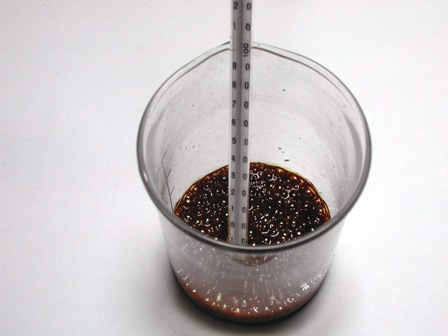
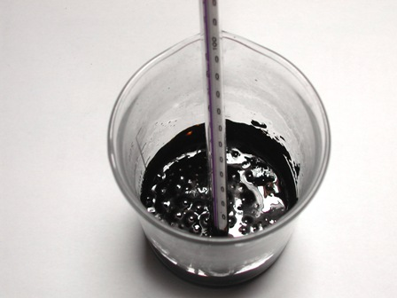
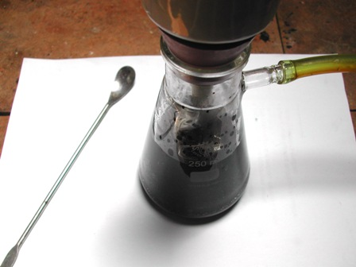
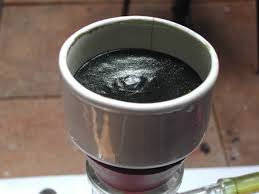
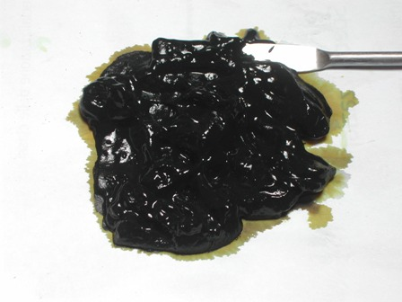

Era da qualche anno che mi ero segnata come "da fare" la sintesi dell'acido citrazinico, questo bell'eterociclico che si vede qui accanto.
Qualche giorno fa ho dedicato una buona porzione di giornata a questo esperimento; sospettavo che mi avrebbe fatto tribolare, ma mi aspettavo alla fine almeno un premiuccio di consolazione.
Il disgraziato non mi ha voluto dare nemmeno questo, proprio a conferma che non tutte le ciambelle riescono col buco.
Ma voglio riassumere la sintesi nei particolari, nel caso servisse a qualcuno che mi legge, il quale, se esiste e sarà più fortunato, mi correggerà...
Premetto che si trovano in rete ottimistiche notizie su questa sintesi, bibliografiche e sperimentali, sulle quali mi sono basato dopo averle tutte ben valutate.
L'acido citrazinico deriva dalla reazione a caldo tra l'acido citrico e l'urea, due reagenti di nessun costo e reperibili ovunque.
Avete presente il canto delle sirene che ammaliava i marinai?
Due reagenti di nessun costo e reperibili ovunque non dovrebbero a maggior ragione incantare qualche chimico sperimentale?
Sarà forse proprio per questo che poi, alla fine, son rimasto sirenamente a bocca asciutta...
La bibliografia consiglia di partire da una miscela di acido citrico/urea con un rapporto molare di 1:3, e così ho fatto, partendo da 20 g di citrico.
Dopo aver ben mescolato in mortaio i due componenti li ho posti in un becher su bagno a sabbia ed innalzato la temperatura.
A circa 70° inizia la fusione e da circa 80° il primo schiumeggiamento per lo svolgimento di ammoniaca.
Innalzare quindi la temperatura fino a 150°-155° e tenerla per circa un'ora; si ha dapprima ingiallimento e poi il colore vira sempre più allo scuro, mentre continuano a svolgersi bolle di gas; ho fatto attenzione a non mai superare la temperatura indicata, ottenendo alla fine un "caramello" denso e nero con riflessi giallastri.


Fase iniziale, dopo 15 min Fase finale, a 155°
Ottenere "un caramello denso e nero" è di per sè un pessimo indizio durante una sintesi, ma tant'è, la procedura è questa e non si scappa.
Tentiamo di andare avanti con fiducia.
Lasciato raffreddare il pastone fino a circa 100°, ho aggiunto porzioni di acqua bollente per tentare di separare per filtrazione sotto vuoto il "buono" dalla parte catramosa evidente.
Però aggiungendo poca acqua e per quanto si riscaldi, appena la sospensione tocca il filtro e si raffredda un po', non passa più niente.
Tentare e ritentare è tempo perso, filtro immediatamente intasato.
Ahi, ahi, sembrava troppo facile...
Ho aggiunto allora molta più acqua (circa 200 ml) e alcalinizzato fino a reazione nettamente basica con NaOH, per portare in soluzione la citrazinamide formatasi.
Dal filtro passa un liquido giallo scurissimo e rimane un abbondante residuo nero, ma ora almeno la soluzione è filtrabile e limpida e ci lascia ancora qualche residua speranza.


Acidificando ora (ottimisticamente con AcOH, ma meglio con acido cloridrico) il sale sodico, DOVREBBE precipitare una polvere gialla (da purificarsi in seguito) di acido citrazinico, il quale è insolubile in acqua.
Purtroppo è arrivato il momento peggiore di tutta la storiella di oggi e la residua speranza vola via: anche aggiungendo HCl non precipita niente!
(Sarei anche curioso di sapere cos'è esattamente questo fango nero rimasto sul filtro, ma sarebbe chiedere troppo)

Il tristissimo residuo nero misterioso
Mannaggia, siamo fregati e ad un punto morto.
Una preziosa giornata quasi buttata via!
Perchè? Non lo so.
Ho cercato di fare tutto al meglio, ma quel fottuto di acido citrazinico non ha voluto farsi vedere.
Dove ho sbagliato? Dov'è il problema? Non ne ho idea.
Avevo dei buoni esperimenti da fare con questo composto e mi tocca rinunciare per una stupida ciambella venuta senza buco!
Vabbè, fossero tutti così i problemi esistenziali...